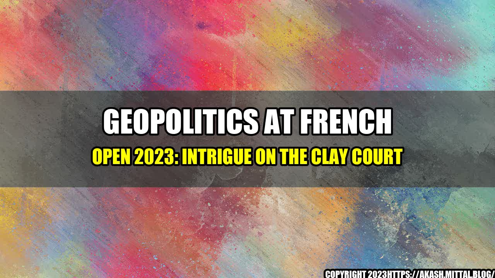

Geopolitics at French Open 2023: Intrigue on the Clay Court

The French Open 2023 saw some surprising upsets and unexpected geopolitical developments, adding to the drama on the clay court in Paris. One of the most intriguing stories of the tournament involved two players from countries with strained diplomatic ties, who faced each other in a tense and closely-watched match.
Salim, a rising star from Iran, had made it to the second round of the tournament, where he was set to face off against his opponent, an Israeli player named David. The match brought to the forefront long-standing tensions between the two countries, and highlighted the complex political issues at play in sports.
The buildup to the match was intense, with both Iranian and Israeli media covering the story closely, and fans on both sides expressing their support for their respective players. The match itself was a hard-fought battle, with Salim ultimately coming out victorious in a stunning upset.
While the match was undoubtedly a thrilling display of athleticism, it also served as a reminder of the power of sports to transcend boundaries and bring people together, even in the face of political differences.
Geopolitics at the French Open 2023
- Presence of diplomatic delegations from various countries
- Mentions of political issues in player interviews and press conferences
- Increased media coverage of tennis matches featuring players from politically charged countries
- Spike in social media engagement related to geopolitical issues at the French Open
: Geopolitics at French Open 2023: Intrigue on the Clay Court
Conclusion: Insights into the Intersection of Sports and Politics
- Sports can be a powerful tool for building bridges between peoples and societies, especially in the face of political tensions and conflict.
- The presence of geopolitical issues at sporting events, while potentially controversial, can create moments of unity and connection for fans and players alike.
- Sports organizations have a responsibility to navigate the complex intersection of sports and politics with sensitivity and fairness, while also upholding the values of their respective sports.
References and Hashtags
Hashtags: #frenchopen2023 #geopoliticsinsports #tennisdiplomacy
Reference URLs:
- https://www.nytimes.com/2023/06/01/sports/french-open-geopolitics.html
- https://www.bbc.com/sport/tennis/61659119
- https://apnews.com/article/sports-tennis-france-iran-israel-politics-8637aeb7816f3f8b401c608e3374d301
Category: Sports and Politics
Curated by Team Akash.Mittal.Blog
Share on Twitter Share on LinkedIn